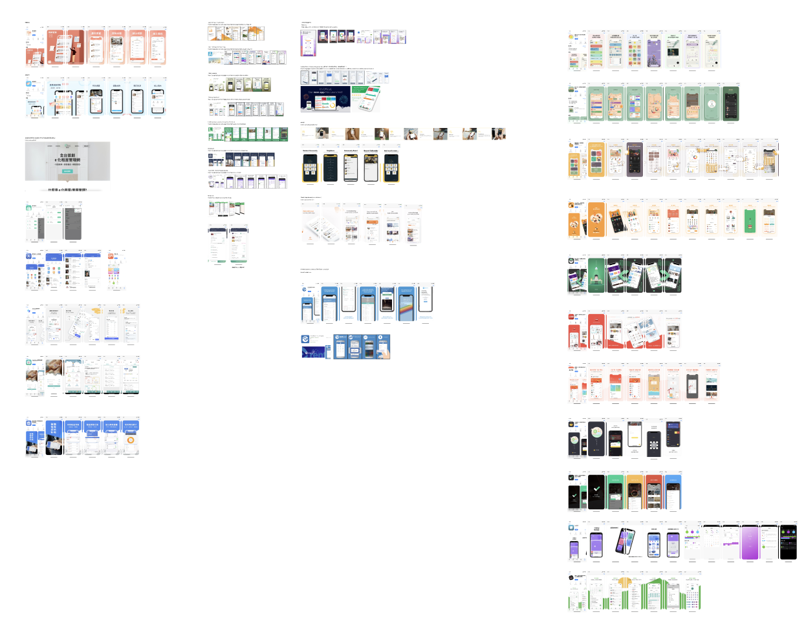
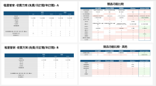
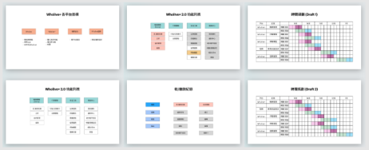
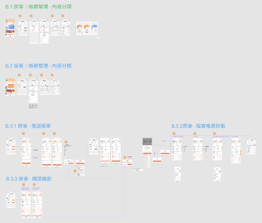
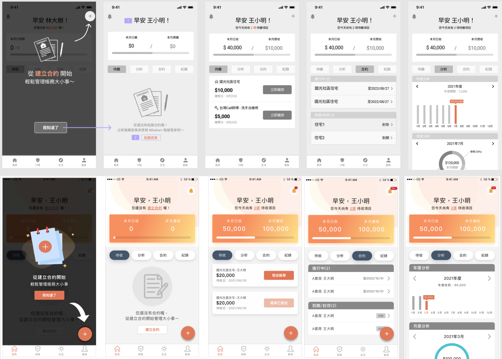
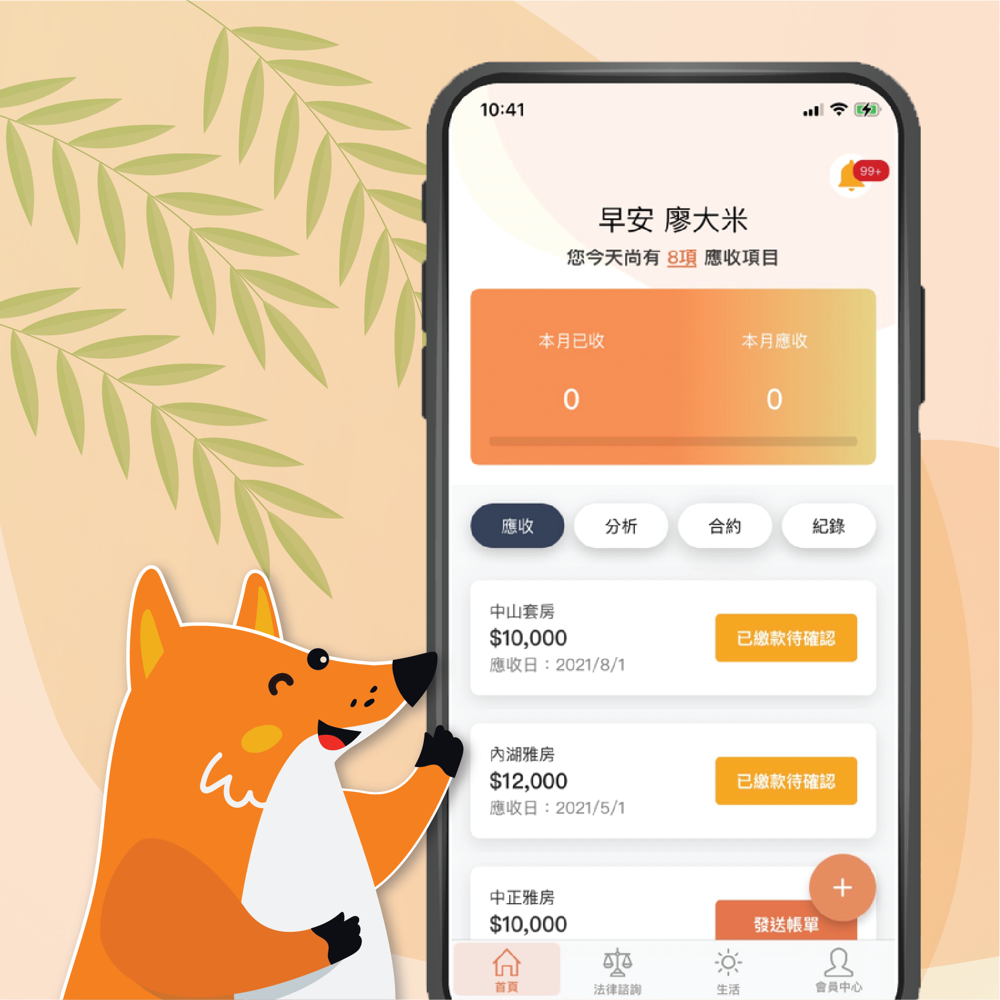

ABOUT
Wholive+: App
SCOPE: |
Work |
|---|---|
TYPE: |
UI/UX, App |
DATE: |
July 2020 - Sept 2020 |
Company: |
Bili Inc. |
ROLE: |
UI/UX Designer, Project Manager |
OVERVIEW
Wholive+ is a platform to help landlords and tenants manage their rental properties and affairs. Users can use the features in the app to make the rental information of both transparent, so that each other can easily manage their rental situations and solve things of renting easily and conveniently.
SKILLS
UX design, wireframes, mockups, project management
TOOLS
Sketch, Figma, Asana
PROCESS
Considerations
When I joined the team, the platform had already been developed and they wanted to enhance the overall user experience. There are a few challenges.
- Lack of documentations: When I was on onboard to the team, there were no organized documentions that could help me to understand the app, and lots of design changes are not documented.
- Small team and tight schedule: There were only one part-time backend developer, one full-time frontend developer(for both ios and android platform) and one part-time marketing intern within the Wholive+ team.
Thus, I decided to take this chance to study the entire structure of the app and documented the details (flows, behaviors, messages), so all the team members could have a clear reference of the product in the future.
Even though we had a small team, it was still important that we needed to have product strategy plan, ui/ux design, project management and product testing plans. Therefore, I had to manage my time wisely so I could deliver the product strategy plan, ui/ux design and prduct testing plan in time.
Research and analysis
I began by researching the related products in Taiwan, Japan, China and the U.S. in order to understand the market, competitors, and potential opportunities our product could provide to our users.


Product strategy and project management
After research and analysis, I closely discussed with the team to define user pain points, product strategies, main features, schedules, rules and working models.
Flow Chart & Wireframes
To help the team better visualize what our app was about and how it was constructed, I documented the main functionalities and the interactions that I could find. Based on the product strategy plan, I also enhanced the flows and intereactions.

Mockups
Due to the time constraint, I used my wireframes to collaborate with the visual designer to create mockups to better illustrate the looks and feels of the product.
RESULT
Summary
I have supported the development team for researching, analyzing and designing the product experiences. Also, I assisted in defining the product strategy plan, project scope, development schedule and testing plan.
